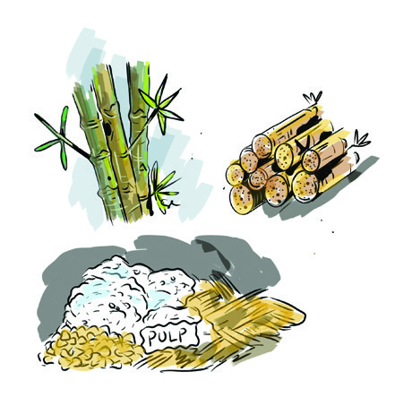
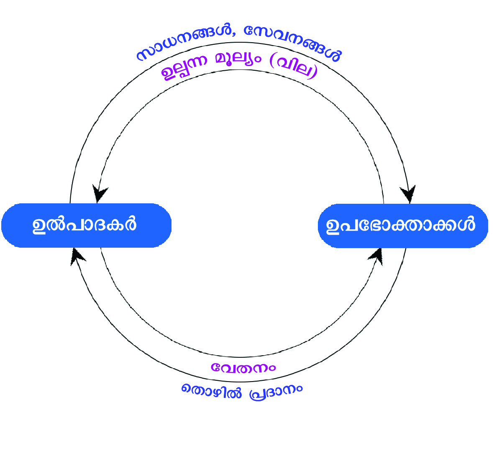

ചിത്രം 6.1 നിരീക്ിക്കൂ. ദൈനംദിനജീവിതത്ിൽ നമ്മുടെ ആവശ്്യങ്ങൾ നിറവേറ്റാൻ
സഹാായിക്കുുന്ന വിവിധ വസ്തുക്കളാാണല്ലലോ നമുുക്ിവിടെ കാാണാാൻ കഴിയുുന്നത്. ഇതിൽ
ചിലതൊ�ൊക്കെ മനുുഷ്്യന്റെ അടിസ്ഥാാന ആവശ്്യങ്ങൾ നിറവേറ്റുുന്നവയുംം മറ്് ചിലത്
ആഗ്രഹങ്ങൾ നിറവേറ്റാൻ സഹാായിക്കുുന്നവയുുമാാണ്. ഇവ ചുുവടെ നൽകിയിരിക്കുുന്ന
പട്ികയിൽ അനുയോ�ോജ്്യമാായ രീതിയിൽ രേഖപ്പെടുുത്തൂൂ.
ചിത്രം 6.1
വിലയുംം വിപണിയുംം
6
Page 27

Page 28




124
ഭാഗം II
സാമൂഹ്്യശാസ്തം II
അടിസ്ഥാന ആവശ്്യങ്ങൾ
നിറവേറ്ുന്നവ
ആഗ്രഹങ്ങൾ നിറവേറ്റാാൻ
സഹാായിക്ുന്നവ
ആഹാാരംം
വാാഹനംം
മനുുഷ്യയന്റെ� നിലനിൽപ്പിന് ഒഴിച്ചുുകൂൂടാാനാാവാാത്ത ആവശ്യയയങ്ങളാാണ് വാായുുു,
ആഹാാരംംം, ജലംംം, വസ്ത്രംംം, പാാാർപ്പിടംംം തുുടങ്ങിയവ. അതിനാാാൽ ഇവയെ�ല്ലാംDZ
അടിസ്ഥാാാന ആവശ്യയയങ്ങൾ (Basic needs) അഥവാാാ പ്രാാാഥമിക ആവശ്യയയങ്ങൾ
എന്ന വിഭാാാഗത്തിൽ ഉൾപ്പെ�ടുുന്നുുു. ഇതുുകൂൂടാാതെ� നമ്മുുടെെ സന്തോŦോഷ
കരമാാായ
ജീവിതത്തെ� സഹാായിക്കുുുന്ന മറ്റ് ചില ആവശ്യയയങ്ങൾ കൂൂടി നമുുക്കുുുണ്ട്്.
ജീവിതാാഭിലാാഷ
ങ്ങൾ നേ�ടിയെ�ടുുക്കാാാൻ സഹാായിക്കുുുന്ന ഇത്തരത്തിലുുുള്ള
ആവശ്യയയങ്ങൾ നമ്മുുടെെ നിലനിൽപ്പിന് അത്യാാ�വശ്യയയമല്ലെ�ങ്കിിലുംം� ഇവയെ�
പൊ�ൊതുുവെ� ആഗ്രഹങ്ങളാായി (wants) കണക്കാാക്കപ്പെ�ടുുന്നുുു. ഓരോ�ോ വ്യയക്തിി
യുുടെയുംം� ആവശ്യയയങ്ങളും�ംം ആഗ്രഹങ്ങളും�ംം മറ്റ് വ്യയക്തിികളിൽ നിന്നുംം� വ്യയത്യയയ
സ്തമാായിരിക്്കുുംം. സാധ്്യമാായ സാാമ്പത്ികവിഭവങ്ങളെ ആശ്രയിച്ചുമാത്രമേ
അത്തരംം ആഗ്രഹങ്ങൾ നിറവേറ്റാൻ ഒരുു വ്യക്തിക്് കഴിയുുകയുള്ളൂൂ.
ആധുുനികമനുുഷ്്യന് ആഹാാരംം, വസ്ത്രം, പാാർപ്പിടംം, വിദ്യയാഭ്്യയാാസംം, ആരോ�ോഗ്യയംം,
വിനോ�ോദംം തുടങ്ങിങ്ങിയ അനേകംം ആവശ്്യങ്ങളുംം ആഗ്രഹങ്ങളുംം ഉണ്ടെന്ന്ന്ന്
വ്യക്തമാായല്ലലോ. ഇവയുുടെ പൂൂർത്ീകരണത്ിനാാവശ്്യമാായ സാാധനങ്ങളുംം
സേവനങ്ങളുംം എങ്ങനെയാാണ് ഉൽപാദിപ്പിക്കുുന്നത്? നമ്മുടെ ആവശ്്യങ്ങൾ
തിരിച്ചറിഞ്് സാാധനങ്ങളുംം സേവനങ്ങളുംം ഉൽപാദിപ്പിക്കുുന്നത് ഉൽപാാ
ദകരാാണ്. ഉദാാഹരണത്ിന് വിദ്യയാാർഥികൾക്് അത്യയാാവശ്്യമുുള്ള ഒരുു
വസ്തുുവാാണ് നോ�ോട്ടുുബുുക്്. പലവിധ സാാധനസാാമഗ്രികൾ ഉപയോ�ോഗ
പ്പെടുുത്തിക്്കകൊണ്ടാാണ് നോ�ോട്ടുുബുുക്കിന്റെ നിർമ്മാാണപ്രക്ിയ പൂൂർത്ിയാാ
കുുന്നത്.
നോ�ോട്ടുുബുുക്് നിർമ്മാാണത്ിന് ഉപയോ�ോഗിക്കുുന്ന സാാധനസാാമഗ്രികളെ
ചിത്രം നിരീക്ഷിച്ച് മനസ്ിലാാക്കൂ.
അസംംസ്കൃത വസ്തുക്കൾ
വ്യവസാായശാാല
ഉല്പന്നംം
Page 29


125
വിലയും വിപണിയും
സ്റ്റാൻഡേർഡ് IX
ചുുവടെ നൽകിയിരിക്കുുന്ന പദസൂര്്യൻ കൂടുുതൽ നിവേശങ്ങൾ ഉൾപ്പെ
ടുുത്ി പൂൂർത്ിയാാക്കൂ.
നോ�ോട്ടുുബുുക്് നിർമ്മാാണത്ിന് മുുള, മരത്തിന്റെ പൾപ്പ്, തുടങ്ങിങ്ങിയ അസംം
സ്കൃത വസ്തുക്കളോ�ോടൊ�ൊപ്പംം യന്ത്രങ്ങൾ, ഇന്ധനംം, കെട്ടിടങ്ങൾ, ഭൂൂമി,
അധ്വവാാനംം എന്നിവയുംം നാംം ഉപയോ�ോഗപ്പെടുുത്തുന്നുു. ഇത്തരത്ിൽ
ഉൽപാദനപ്രക്ിയയിൽ ഉപയോ�ോഗിക്കുുന്ന ഘടകങ്ങളെ നിവേശങ്ങൾ
(Input) എന്്നുുംം ഈ നിവേശങ്ങളെ ഉപയോ�ോഗിച്ച് നിർമ്ിക്കുുന്ന വസ്തുക്കളെ
ഉല്പന്നങ്ങൾ (Output) എന്്നുുംം വിളിക്കുന്നുു. നിവേശങ്ങളെ ഉല്പന്നങ്ങളാാക്ി
മാാറ്റുുന്ന പ്രക്ിയയാാണ് ഉൽപാദനംം (Production). ഉൽപാദന പ്രക്ിയ
യിലൂൂടെയാാണ് നാംം ഉപയോ�ോഗിക്കുുന്ന എല്ലാാ ഉല്പന്നങ്ങളുംം ഉണ്ടാാകുുന്നത്.
നിവേശങ്ങൾ
......................................
യന്ത്രങ്ങൾ
കെട്ിടങ്ങൾ
..........................
..........................
............................
ഭൂമി
സംംഘാാടനംം
ഉൽപാാദനധർമ്മംം (Production Function)
ഉല്പന്നങ്ങളുുടെ ആവശ്്യയംം കൂടുുതലാണെങ്കിൽ അതിന്റെ ഉൽപാദനംം
വർധിപ്പിക്കേണ്ടതാായി വരുുമല്ലലോ. ഇതിനാായി ഉൽപാദകർക്് സ്വീകരി
ക്കാാവുുന്ന വിവിധ മാാർഗങ്ങൾ എന്തെല്ലാാമാായിരിക്്കാാംം?
നിവേശങ്ങളുുടെ അളവ് വർധിപ്പിക്്കാാംം.
മികച്ച സാങ്കേതികവിദ്യ ഉപയോ�ോഗപ്പെടുുത്്താാംം.
ഉൽപാദകഘടകങ്ങളുുടെ ഉൽപാദനക്ഷമത വർധിപ്പിക്്കാാംം.
ഇത്തരത്ിൽ ആവശ്്യങ്ങൾക്കനുുസരിച്ച് ഉൽപാദിപ്പിക്കുുന്ന ഉല്പന്നങ്ങളുുടെ
അളവ് കൂൂട്ടുുകയോ�ോ കുുറയ്ക്കുുകയോ�ോ ചെയ്്യാാംം. ഉല്പന്നത്തിന്റെ അളവ് അത്
ഉൽപാദിപ്പിക്കുുന്നതിനാായി ഉപയോ�ോഗപ്പെടുുത്ിയ നിവേശങ്ങളുുടെ അളവി
നെയുംം അവയുുടെ ഉൽപാദനക്ഷമതയെയുംം ആശ്രയിച്ചിരിക്കുന്നുു.
Page 30


126
ഭാഗം II
സാമൂഹ്്യശാസ്തം II
ഒരുു നിശ്ിത കാാലയളവിൽ ഉൽപാദന പ്രക്ിയയിൽ ഉപയോ�ോഗിച്ചിട്ടുുള്ള നിവേശങ്ങളുംം
നിർമ്മിക്കപ്പെടുുന്ന ഉല്പന്നങ്ങളുംം തമ്ിലുുള്ള സാങ്കേതികബന്ധമാാണ് ഉൽപാദനധർമ്മംം.
ഈ ബന്ധത്തെ നമുുക്് ഒരുു സമവാക്്യത്തിന്റെ രൂൂപത്ിൽ എഴുുതുുവാാൻ
സാാധിക്്കുുംം. ഉൽപാദകഘടകങ്ങളാായ ഭൂൂമി, തൊ�ൊഴിൽ (അധ്വവാാനംം), മൂൂലധനംം,
സംംഘാടനംം എന്നിവയെ യഥാക്രമംം N, L, K, O തുടങ്ങിങ്ങിയ നിവേശ സൂൂചക
ങ്ങളാായുംം Q ആകെ ഉൽപാദിപ്പിക്കുുന്ന ഉല്പന്ന സൂൂചകമാായുംം പരിഗണി
ച്ചാാൽ ഉൽപാദനധർമ്മത്തെ ചുുവടെ നൽകിയിരിക്കുുന്ന വിധംം സമവാക്്യ
രൂൂപത്ിൽ എഴുുതാാവുുന്നതാാണ്.
Q = f (N, L, K, O) (Q is the function of N, L, K, O)
Q - മൊ�ൊത്ത ഉല്പന്നത്തിന്റെ അളവ് (Total quantity of products)
N - ഭൂൂമി (Land)
L - തൊ�ൊഴിൽ അഥവാാ അധ്വവാാനംം (Labour)
K - മൂൂലധനംം (Capital) (സാങ്കേതികവിദ്യ, കെട്ടിടങ്ങൾ, ഉപകരണങ്ങൾ,
സാാമ്പത്ിക മൂൂലധനംം മുുതലാായവ)
O - സംംഘാടനംം (Organisation)
സ്ിരനിവേശങ്ങളുംം അസ്ിരനിവേശങ്ങളുംം
(Fixed inputs and Variable inputs)
നിവേശങ്ങൾ
വ്യത്യസ്തമാായ
അളവിൽ
ഉപയോ�ോഗപ്പെടുുത്തിക്്കകൊണ്ട്
ആവശ്്യമാായ
അളവിൽ
ഉൽപാദനംം
നടത്തുുവാാൻ
സാാധിക്്കുുംം.
എല്ലാാ
നിവേശങ്ങളുുടെയുംം
അളവ്
വർധിപ്പിക്കാാൻ
കഴിയുമോ�ോ?
ചുുരുങ്ങിുങ്ങിയ (ഹ്രസ്വ) കാാലയളവിനുള്ളിുള്ളിൽ എല്ലാാ നിവേശങ്ങളുുടെയുംം
അളവിൽ മാാറ്റംം വരുുത്താാൻ കഴിയുുകയി്ല. ഇത്തരത്ിൽ ചുുരുങ്ങിുങ്ങിയ
കാാലയളവിനുള്ളിുള്ളിൽ അളവിൽ മാാറ്റംം വരുുത്താാൻ കഴിയാത്ത നിവേശ
ങ്ങളെ സ്ിരനിവേശങ്ങൾ എന്ന് വിളി
ക്കുന്നുു. ഭൂൂമി, സംംഘാടനംം മുുതലാായവ
സ്ിരനിവേശങ്ങൾക്് ഉദാാഹരണങ്ങ
ളാാണ്.
എന്നാാൽ ചുുരുങ്ങിുങ്ങിയ കാാലയളവിനുു
ള്ളിൽ തൊ�ൊഴിൽ, മൂൂലധനംം തുടങ്ങിങ്ങിയ
നിവേശങ്ങളുുടെ അളവിൽ വ്യത്യയാാസംം
വരുുത്തിക്്കകൊണ്ട് ഉൽപാദനംം വർധിപ്പി
ക്കാാൻ കഴിയുംം. ഇത്തരത്ിൽ അളവിൽ
മാാറ്റംം വരുുത്താാൻ കഴിയുുന്ന നിവേശ
ങ്ങളെ അസ്ിരനിവേശങ്ങൾ എന്ന്
വിളിക്്കാാംം.
ഹ്രസ്വ - ദീർഘകാാല ഉൽപാാദനധർമ്മംം
(Short-run and Long-run production function)
ഉൽപാദനപ്രവർത്തനംം ഹ്രസ്വകാാലത്ിലുംം ദീർഘ
കാാലാടിസ്ഥാാനത്ിലുംം വ്യത്യസ്തമാായി നിർവചിക്ക
പ്പെടുന്നുു. ഒരുു ഉൽപാദന സംംരംഭത്തിലെ ഉൽപാദന
പ്രക്ിയയിൽ ഏതെങ്കിലുംം ഒരുു നിവേശമെങ്കിലുംം
സ്ിരമാായി നിൽക്കുുന്ന സമയത്തെ/സമയപരി
ധിയെ ഹ്രസ്വകാാല ഉൽപാദനധർമ്മംം (Short-run
production function) എന്്നുുംം എല്ലാാ നിവേശങ്ങളുംം
ഉൽപാദനപ്രക്ിയയിൽ മാാറുുന്ന ഘട്ടത്തെ ദീർഘ
കാാല ഉൽപാദനധർമ്മംം (Long-run production function)
എന്്നുുംം നിർവചിക്കപ്പെട്ിരിക്കുന്നുു.
Page 31


127
വിലയും വിപണിയും
സ്റ്റാൻഡേർഡ് IX
ഹ്രസ്വകാാലയളവിലെ നിവേശങ്ങളുുടെ പ്രത്്യയേകത ഉൾപ്പെടുുത്ി ചുുവടെ
നൽകിയിട്ടുുള്ള ഡയഗ്രം പൂൂർത്ിയാാക്കൂ.
......................................
തൊ�ൊഴിൽ
(അധ്വവാാനംം)
അസ്ിര
നിവേശങ്ങൾ
.................................
......................................
സംംഘാാടനംം
ഉപഭോ�ോഗംം, ഉപഭോ�ോക്താാവ് (Consumption, Consumer)
ഉൽപാദനപ്രക്ിയയിലൂൂടെ ഉൽപാദിപ്പിക്കുുന്ന സാാധനങ്ങളുംം സേവന
ങ്ങളുംം ഉപയോ�ോഗപ്പെടുുത്ിയാാണ് മനുുഷ്്യൻ തന്റെ ആവശ്്യങ്ങൾ
നിറവേറ്റുുന്നതെന്ന്ന്ന് വ്യക്തമാായല്ലലോ. ഇങ്ങനെ മനുുഷ്്യൻ തന്റെ ആവശ്്യ
ങ്ങൾ നിറവേറ്റുുന്നതിനാായി സാാധനങ്ങളുംം സേവനങ്ങളുംം വാങ്ങിാങ്ങി ഉപയോ�ോ
ഗിക്കുുന്നതിനെ
ഉപഭോ�ോഗംം (Consumption)
എന്നുുപറയുന്നുു.
വില
കൊ�ൊടുത്്തതോ, കൊ�ൊടുുക്കാമെന്ന കരാാറിലോ�ോ സാാധനമോ�ോ സേവനമോ�ോ വാങ്ങിാങ്ങി
ഉപയോ�ോഗിക്കുുന്ന ആളാാണ് ഉപഭോ�ോക്താാവ്
(Consumer). ഉപഭോ�ോക്താാ
വിന്റെ സംംതൃപ്ിയാാണ് എല്ലാാ സാാമ്പത്ികപ്രവർത്തനങ്ങളുുടെയുംം പ്രധാാന
ലക്ഷ്യംം. സാാധനങ്ങളുംം സേവനങ്ങളുംം വാങ്ങിാങ്ങി ഉപയോ�ോഗിക്കുുന്നതി
നുുള്ള ഉപഭോ�ോക്താാവിന്റെ സാാമ്പത്ികശേഷ
ി ഉപഭോ�ോഗത്തെ സ്വവാാധീനി
ക്കുുന്ന ഒരുു പ്രധാാന ഘടകമാാണ്.
ഉപഭോ�ോഗത്തെ സ്വവാാധീനിക്ുന്ന ഘടകങ്ങൾ
(Factors influencing consumption)
നാംം ഉൾപ്പെടുുന്ന സമൂൂഹത്തിലെ ഓരോ�ോ വ്യക്തിയുംം വിവിധ ആവശ്്യ
ങ്ങൾക്കാായി പണംം ചെലവാാക്കുുന്നത് വ്യത്യസ്ത അളവിലാാണല്ലലോ. ഒരുു
വ്യക്തിയുുടെ അല്ലെങ്കിൽ കുടുംംബത്തിന്റെ ആകെ വരുുമാാനത്തെ ഭക്ഷണംം,
വസ്ത്രം, പാാർപ്പിടംം, ഗതാാഗതംം, ആരോ�ോഗ്യയംം, വിദ്യയാഭ്്യയാാസംം, വിനോ�ോദംം
തുടങ്ങിങ്ങി വിവിധ ആവശ്്യങ്ങൾക്്കുുംം ആഗ്രഹങ്ങൾക്കുുമാായി എങ്ങനെ
വിനിയോ�ോഗിക്കുന്നുു എന്നതാാണ് ഉപഭോ�ോഗരീതി (Consumption Pattern) സൂൂചി
പ്പിക്കുുന്നത്. ഉപഭോ�ോഗരീതി ഓരോ�ോ വ്യക്തികളിലുംം വ്യത്യസ്തമാായിരിക്്കുുംം.
ഇതിനെ പല ഘടകങ്ങളുംം സ്വവാാധീനിക്കുന്നുു.
Page 32


128
ഭാഗം II
സാമൂഹ്്യശാസ്തം II
വരുുമാാനത്ിനുുപുുറമെ മറ്റെന്തെല്്ലാാംം ഘടകങ്ങളാായിരിക്്കുുംം ഉപഭോ�ോഗത്തെ
സ്വവാാധീനിക്കുുന്നത്?
വിവിധ ആവശ്്യങ്ങൾ നിറവേറ്റുുന്നതിനാായി വ്യക്തികളുംം കുടുംംബങ്ങളുംം
മാത്രമ്ല, ഗവൺമെന്്റുുംം വിവിധ സ്ഥാാപനങ്ങളുംം സംംഘടനകളുമെല്്ലാാംം
ഉപഭോ�ോഗംം നടത്തുന്നുു. പരിമിതമാായ വിഭവങ്ങളുംം (Limited resources)
വർധിച്ചുവരുുന്ന ആവശ്്യങ്ങളുംം ആഗ്രഹങ്ങളുംം (Unlimited needs and wants)
ഇന്നത്തെ സമ്പദ്വ്യവസ്ഥ നേരിടുുന്ന പ്രധാാന വെല്ലുുവിളിയാാണ്. വിഭവ
ങ്ങളുുടെ ചൂഷ
ണത്ിനുംം ദുുരുുപയോ�ോഗത്ിനുംം വർധിച്ചുവരുുന്ന ജന
സംഖ്്യയുംം ഒരുു പ്രധാാന കാാരണമാാകുന്നുു. ഭാവിതലമുുറയുുടെ ആവശ്്യങ്ങൾ
കൂടി പരിഗണിച്ചുകൊ�ൊണ്ട്
് അവയെക്കൂടി നിറവേറ്റാൻ കഴിയുംംവിധംം നില
വിലെ വിഭവങ്ങളെ മെച്ചപ്പെട്ട രീതിയിൽ ശാസ്ത്രീയമാായി ഉപയോ�ോഗപ്പെടുു
ത്തേണ്ടതുണ്ട്.
സുസ്ിരഉപഭോ�ോഗംം (Sustainable Consumption)
പാാരിസ്ിതിക ആഘാാതംം കുുറയ്ക്കുുന്ന രീതിയിലുുള്ള സാാധനങ്ങളുുടെയുംം
സേവനങ്ങളുുടെയുംം ഉപഭോ�ോഗമാാണ് സുുസ്ിരഉപഭോ�ോഗംം. ഭാവിതലമുുറയ്ക്കാായി
ഉപഭോ�ോഗത്തെ സ്വവാാധീനിക്കുുന്ന ഘടകങ്ങൾ ഉൾക്്കകൊള്ളിച്ചിട്ടുുള്ള ഡയഗ്രം
ചുുവടെ നൽകിയിരിക്കുന്നുു. കൂടുുതൽ കണ്ടെത്ി പൂൂർത്ിയാാക്കൂ.
ഉപഭോ�ോക്താാ
ക്കളുടെ
അഭിരുചികളുംം
താാൽപര്യങ്ങളുംം
ഉപഭോ�ോഗത്തെ
സ്വവാാധീനിക്ുന്ന
ഘടകങ്ങൾ
.......................................
.......................................
കാാലാാവസ്ഥ
പാാരിസ്ിതിക
അവബോോധംം
.......................................
Page 33


129
വിലയും വിപണിയും
സ്റ്റാൻഡേർഡ് IX
കരുുതിവച്ചുകൊ�ൊണ്ടുു
ള്ള വിഭവങ്ങളുുടെ ഉപയോ�ോഗ പുുനരുുപയോ�ോഗ ക്രമമാാണ്
സുുസ്ിരഉപഭോ�ോഗത്ിലൂൂടെ ലക്ഷഷ്യ്യമിടുുന്നത്. സുുസ്ിരഉപഭോ�ോഗംം എന്ന
ആശയംം സുുസ്ിരഉൽപാദനവുംം സുുസ്ിരവികസനവുുമാായി ബന്ധപ്പെട്്
നിരവധി പൊ�ൊതുുസവിശേഷ
തകൾ പങ്കിടുന്നുു
. ഐക്യരാാഷ്ട്രസഭയുുടെ
സുുസ്ിരവികസന ലക്ഷഷ്യ്യങ്ങളിൽ പന്ത്രണ്ടാാമത്തേത് സുുസ്ിരഉപഭോ�ോ
ഗവുംം സുുസ്ിരഉൽപാദനരീതിയുംം ഉറപ്പാക്കേണ്ടതിന്റെ ആവശ്്യകത
ചൂണ്ടിക്കാാട്ടുന്നുു. ഇത് നിലവിലുുള്ള തലമുുറയുുടെയുംം ഭാവി തലമുുറയുു
ടെയുംം ഉപജീവനമാാർഗംം നിലനിർത്തുുന്നതിനുുള്ള താക്കോാലാാണ്.
'എല്ലാവരുടെയും ആവശ്്യങ്ങൾ നിർവഹിക്കാാനുള്ള വിഭവങ്ങൾ ഭൂമി
യിലുണ്ട്. എന്നാാൽ ഒരാാളുടെപോോലും അത്്യയാാർത്ി പരിഹരിക്കാാൻ
അത് തികയുകയുമില്ല.'
- മഹാാത്മാാഗാാന്ി
സുസ്ിരഉൽപാാദനംം (Sustainable Production)
പ്രകൃതിവിഭവങ്ങളുുടെയുംം അസംംസ്കൃതവസ്തുക്കളുുടെയുംം ചൂഷ
ണവുംം
ദുുരുുപയോ�ോഗവുംം പരമാാവധി കുുറച്ചുകൊ�ൊണ്ട്
് സാാധനങ്ങളുംം സേവന
ങ്ങളുംം ഉൽപാദിപ്പിക്കുുക എന്നുുള്ളതാാണ് സുുസ്ിരഉൽപാദന
ത്തിന്റെ പ്രഥമലക്ഷ്യംം. സുുസ്ിരഉൽപാദനത്തിന്റെ മറ്റുു ലക്ഷഷ്യ്യങ്ങൾ
ചുുവടെ നൽകിയിരിക്കുന്നുു.
വിഭവങ്ങളുുടെ ഫലപ്രദമാായ ഉപയോ�ോഗത്ിലൂൂടെ പാാരിസ്ിതിക
ആഘാാതങ്ങൾ കുുറയ്ക്കുുക.
വിഭവങ്ങളുുടെ പുുനരുുൽപാദന സാധ്്യത പരമാാവധി പ്രയോ�ോ
ജന
പ്പെടുുത്തുുക.
ഉൽപാദനത്ിലൂൂടെയുംം ഉല്പന്നങ്ങളുുടെ പുുനരുുപയോ�ോഗത്ിലൂൂ
ടെയുംം ആവശ്്യമാായ എല്ലാാ സാാധനങ്ങളുംം പരമാാവധി ജനങ്ങ
ളിലേക്് എത്ിക്കുുക.
ഊർജസംംരക്ഷണംം പരമാാവധി ഉറപ്പുുവരുുത്തുുക.
സുുരക്ിതമാായ തൊ�ൊഴിലിടവുംം തൊ�ൊഴിലാാളികളുുടെ സുുരക്ി
തത്വവുംം ഉറപ്പാാക്കുുക.
പരിസ്ിതിക്് ദോ�ോഷംം വരുുത്താതെയുുള്ള ഉപഭോ�ോഗസംംസ്കാാരവുംം
ഉൽപാദനരീതിയുംം വളർത്തിയെടുക്കേണ്ടതിന്റെ ആവശ്്യകതയെ
ക്കുുറിച്ച് ഐക്യരാാഷ്ട്രസംംഘടന പോ�ോലുുള്ള ഏജൻസികൾ മുുന്നറിയിപ്പ്
നൽകുന്നുണ്ട്. പരിസ്ിതി സൗഹൃദപരമാായ ഉൽപാദന, ഉപഭോ�ോഗ
രീതികൾ പിന്തുടരേണ്ടത് സുുസ്ിരവികസനത്തെ പരിപോ�ോഷിപ്പി
ക്കുുന്നതിന് അത്യന്താപേക്ിതമാാണ്.
Page 34


130
ഭാഗം II
സാമൂഹ്്യശാസ്തം II
വികസനപ്രവർത്തനങ്ങളുടെ ഭാഗമായി നിങ്ങളുടെ ചുറ്ുപാടും എന്തെല്ാം
മാറ്റങ്ങളാണ് നടക്ുന്നതെന്ന് കണ്ടെത്തി ചുവടെ രേഖപ്പെടുത്തൂ.
കെട്ടിടങ്ങൾ, റോോഡുകൾ തുടങ്ങിങ്ങി വിവിധ നിർമ്ാണപ്രവർത്തനങ്ങൾ
ക്ായി പാറകളും കുന്നുകളും നിരപ്പാക്കപ്പെടുന്നു.
വികസനപ്രവർത്തനങ്ങൾ സമൂൂഹത്തിന്റെ പുരോ�ോഗതിക്് അത്യന്താപേ
ക്ഷിതമാണെങ്ിലും പരിസ്ഥിതിക്ും മനുഷ്്യർ ഉൾപ്പെടുന്ന ജീവജാലങ്ങളി
ലുമുണ്ടാക്ുന്ന പ്രത്യാഘാതങ്ങൾ എന്തെല്ാമായിരിക്ും? രേഖപ്പെടുത്തൂ.
പ്രാദേശിിക കാലാവസ്ഥയെ� ദോോഷകരമായി ബാാധിക്കുന്നു.
ഇത്തരത്തിത്തിലുള്ള പ്രത്യാഘാതങ്ങളെ പരമാവധി കുറച്ചുകൊ�ൊണ്ട് രാജ്യ
ത്തിന്റെ വികസനപ്രവർത്തനങ്ങൾ ഏതെല്ാം തരത്തിത്തിൽ സാധ്യമാക്ാം?
ചർച്ച ചെയ്് നിർദേശങ്ങൾ ക്ര
രോഡീകരിക്കൂൂ.
സുസ്ഥിരവിികസനം (Sustainable Development)
രാജ്യത്തിന്റെ സാമ്പത്തികവളർച്ചയെയും പുരോ�ോഗതിയെയും ലക്ഷഷ്യ്യമിട്്
നാം വിവിധ വികസനപ്രവർത്തനങ്ങളിലൂൂടെ കടന്നുപോ�ോകുമ്്പപോൾ പല
പ്്പപോഴും അത് പ്രകൃതിവിഭവങ്ങളുടെ ചൂഷ
ണത്തിനും പരിസ്ഥിതിനാശ
ത്തിനും ഇടയാക്ുന്നു. വികസനപ്രവർത്തനങ്ങൾ രാജ്യത്തിന്റെ സാമ്പ
ത്തികപുരോ�ോഗതിയിലും ജനങ്ങളുടെ ജീവിതനിലവാരത്തിത്തിലും അനുകൂൂല
മായ മാറ്റങ്ങൾ സൃഷ്ിക്കുന്നുവെങ്ിലും നിരവധി സാമൂൂഹിക-പാരിസ്ി
തിക പ്രശ്നങ്ങൾക്് കാരണമാവുകയും ചെയ്ുന്നു.
ഭാവിതലമുറയുടെ ആവശ്യങ്ങളെ തൃപ്തിപ്പെടുത്തുന്നതിന് വിട്ുവീഴ്ച വരു
ത്താതെ ഇപ്്പപോഴത്തെ തലമുറയുടെ ആവശ്യങ്ങൾ നിറവേറ്ുംവിധമുള്ള
വികസനമാണ് സുസ്ഥിരവികസനം.
ആധുനിക കാലഘട്ടത്തിത്തിൽ സുസ്ഥിര ഉൽപാദന, ഉപഭോ�ോഗരീതികളുടെ
പ്രാധാന്യം ചർച്ച ചെയ്് കുറിപ്പ് തയ്യാറാക്കൂൂ.
Page 35


131
വിലയും വിപണിയും
സ്റ്റാൻഡേർഡ് IX
സുസ്ിരവികസന ലക്ഷ്യങ്ങൾ
(Sustainable Development Goals)
ഐക്യരാാഷ്ട്രസഭ മുന്്നനോട്ടുവെച്ച 17 ലക്ഷഷ്യ്യങ്ങളുുടെ സഞ്ചയമാാണ് സുുസ്ിര
വികസന ലക്ഷഷ്യ്യങ്ങൾ (Sustainable Development Goals) എന്നറിയപ്പെടുു
ന്നത്. 2015 ൽ പ്രഖ്്യയാാപിച്ച ഈ ലക്ഷഷ്യ്യങ്ങൾ 2030-ഓടെ നേടിയെടുുക്കാാ
നാാണ് ഐക്യരാാഷ്ട്രസഭ ലക്ഷഷ്യ്യമിടുുന്നത്. മെച്ചപ്പെട്ടതുംം സുുസ്ിരവുുമാായ
ഒരുു ന്ല ഭാവി എല്ലാാവർക്്കുുംം കൈവരിക്കുുന്നതിനുുള്ള മാാതൃകയാാണ്
സുുസ്ിരവികസന ലക്ഷഷ്യ്യങ്ങൾ മുന്്നനോട്ടുുവയ്ക്കുുന്നത്.
“വരുംം തലമുുറയ്ക്ക് അവരുുടെ ആവശ്്യങ്ങൾ നിറവേറ്റാനുുള്ള കഴിവിൽ കുുറവുുവരാതെ ഇന്നത്തെ
തലമുുറ അവരുുടെ ആവശ്്യങ്ങൾ നിറവേറ്റുുന്ന സമീപനമാാണ് സുുസ്ിരവികസനംം”
- ഐക്യരാാഷ്ട്ര സംംഘടന - ബ്രണ്ട്ലാന്റ് കമ്മിഷൻ
1. ദാാരിദ്ര്യനിർമ്മാാർജനംം
2. വിശപ്പില്ലാത്ത അവസ്ഥ
3. ന്ല ആരോ�ോഗ്യവുംം ക്ഷേമവുംം
4. ഗുുണമേന്മയുുള്ള വിദ്യയാഭ്്യയാാസംം
5. ലിംംഗസമത്വവംം
6. ശുുദ്ധമാായ വെള്ളവുംം പൊ�ൊതുശുു
ചി
ത്വവുംം
7. താങ്ങാാനാാവുുന്നതുംം ശുുദ്ധവുുമാായ
ഊർജംം
8. മാന്്യമാായ തൊ�ൊഴിലുംം സാാമ്പത്ിക
വളർച്ചയുംം
9. വ്യവസാായംം, നവീകരണംം, അടിസ്ഥാാന
സൗകര്യങ്ങൾ
10. അസമത്വവംം ലഘൂൂകരിക്കൽ
11. സുുസ്ിരനഗരങ്ങളുംം സമൂൂഹങ്ങളുംം
12. ഉത്തരവാദിത്വ ഉപഭോ�ോഗവുംം
ഉൽപാദനവുംം
13. കാാലാാവസ്ഥാപ്രവർത്തനംം
14. ജലത്ിനടിയിലെ ജീവൻ
15. കരയിലെ ജീവൻ
16. സമാാധാാനംം, നീതി, ശക്തമാായ നിയമ
സ്ഥാാപനങ്ങൾ
17. ലക്ഷഷ്യ്യങ്ങൾ കൈവരിക്കാാനുുള്ള
പങ്കാാളിത്തംം
സുസ്ിരവികസന ലക്ഷ്യങ്ങൾ
നമുുക്് വേണ്ടത് പരിസ്ിതിക്്കുുംം ജീവജാാലങ്ങൾക്്കുുംം ആഘാാതമേ
ല്പിക്കാത്ത ഒരുു വികസനസമീപനമാാണ്. അത്തരത്ിലുുള്ള വികസന
കാാഴ്ചപ്പാടാാ
ണ് സുുസ്ിരവികസനംം മുന്്നനോട്ടുുവയ്ക്കുുന്നത്. വിഭവങ്ങളുുടെ
ചൂഷ
ണംം നിയന്ത്രിച്്ചുുംം പാാരിസ്ിതിക ആഘാാതങ്ങൾ കുുറച്്ചുുംം കൈവരി
ക്കുുന്ന വികസനത്തെയാാണ് പൊ�ൊതുവെ സുുസ്ിരവികസനംം (Sustainable
Development) എന്നതുകൊ�ൊണ്ട് ഉദ്ദേശിക്കുുന്നത്.
Page 36




132
ഭാഗം II
സാമൂഹ്്യശാസ്തം II
ഉൽപാാദകരുംം ഉപഭോ�ോക്താക്കളുംം തമ്ിലുള്ള ബന്ധംം
(Relationship between Producers and Consumers)
ചിത്രംം 6.2 നിരീക്ഷിച്ച് ഉൽപാാദകരും�ംം ഉപഭോ�ോക്താാക്കളും�ംം തമ്മിൽ
സാാാമ്പത്തിക പ്രവർത്തനത്തിലുുുള്ള പരസ്പരബന്ധംംം തിരിച്ചറിിയൂൂൂ.
ഉപഭോ�ോക്താക്ക
ൾ തങ്ങളുുടെ ആവശ്്യങ്ങൾ നിറവേറ്റുുന്നതിനാായി ഉൽപാാ
ദകരെയുംം ഉൽപാദകർ തങ്ങളുുടെ ആവശ്്യങ്ങൾ നിറവേറ്റുുന്നതിനാായി
ഉപഭോ�ോക്താക്കളെ
യുംം
ആശ്രയിക്കുന്നുു.
ഉൽപാദകർ ഉപഭോ�ോക്താക്ക
ളുുടെ ആവശ്്യ
ങ്ങൾക്കനുുസരിച്ച് സാാധനങ്ങളുംം സേവന
ങ്ങളുംം ഉൽപാദിപ്പിച്ച് ഉപഭോ�ോക്താക്ക
ളിൽ
എത്ിക്കുന്നുു. ഉപഭോ�ോക്താക്ക
ൾ ഉല്പന്ന
മൂല്്യയംം (വില) നൽകി ഉല്പന്നംം വാങ്ങുന്നുു.
ഉൽപാദനപ്രക്ിയയിലെ തൊ�ൊഴിൽവിഭാഗംം
കൂടിയാായ ഉപഭോ�ോക്താക്ക
ൾ ഉൽപാദന
പ്രക്ിയയ്ക്ക് ആവശ്്യമാായ തൊ�ൊഴിൽ (അധ്വവാാനംം)
പ്രദാാ
നംം ചെയ്യുമ്്പപോൾ ഉൽപാദകർ പ്രതി
ഫലമാായി ഉപഭോ�ോക്താക്ക
ൾക്് വേതനംം
(കൂൂലി) നൽകുുകയുംം ചെയ്യുന്നുു.
ഉൽപാദകരുംം ഉപഭോ�ോക്താക്ക
ളുംം തമ്ി
ലുുള്ള പരസ്പരബന്ധംം സാധ്്യമാാകുുന്നത്
വിപണിയിലൂൂടെയാാണ്.
ചുുവടെ നൽകിയിരിക്കുുന്ന സൂൂചകങ്ങളുുടെ അടിസ്ഥാാനത്ിൽ 'സുുസ്ിര
വികസനവുംം രാജ്്യപുരോ�ോഗതിയുംം' എന്ന വിഷയത്ിൽ ഒരുു സെമിനാാർ
പ്രബന്ധംം തയ്യാാറാാക്ി റിപ്്പപോർട്് അവതരിപ്പിക്കുുക.
സൂചകങ്ങൾ
സുുസ്ിരഉൽപാദനംം, സുുസ്ിരഉപഭോ�ോഗംം, സുുസ്ിരവികസനംം
സുുസ്ിരവികസന കാാഴ്ചപ്പാട് രൂൂപീകരണത്ിൽ സുുസ്ിരഉപഭോ�ോഗ
ത്തിന്റെയുംം സുുസ്ിരഉൽപാദനത്തിന്റെയുംം പ്രാധാന്്യയംം.
വിദ്യയാാർഥി എന്ന നിലയിൽ നിങ്ങളുുടെ ഉത്തരവാദിത്വവംം.
സുുസ്ിരവികസനംം നേരിടുുന്ന വെല്ലുുവിളികളുംം അവ പരിഹരിക്കാാ
നുുള്ള നിർദേശങ്ങളുംം.
ചിത്രം 6.2
Page 37


133
വിലയും വിപണിയും
സ്റ്റാൻഡേർഡ് IX
ചിത്രം 6.2 നിരീക്ഷിച്ച് ഉൽപാദകരുംം ഉപഭോ�ോക്താക്ക
ളുംം തമ്ിൽ സാാമ്പത്ിക
പ്രവർത്തനങ്ങളിലുുള്ള പരസ്പരബന്ധത്തെക്കുുറിച്ച് വിശകലനക്കുുറിപ്പ് തയ്യാാ
റാാക്കൂ.
വിപണി (Market)
ഉൽപാദനപ്രക്ിയയിലൂൂടെ നിർമ്മിച്ച സാാധ
നങ്ങളുംം സേവനങ്ങളുംം നേരിട്്ടടോ വില്പന
ക്കാാർ മുഖേനയോ�ോ ഉപഭോ�ോക്താാവിന് ലഭ്യമാാ
ക്കുുന്ന പ്രക്ിയയാാണ് വിപണനംം (Marketing).
വില്പനക്കാാർക്്കുുംം ഉപഭോ�ോക്താക്ക
ൾക്്കുുംം ഇട
യിൽ സാാധനങ്ങളുംം സേവനങ്ങളുംം വിനിമയംം
ചെയ്യാാനുുള്ള സംംവിധാാനമാാണ് വിപണികൾ.
വിഭവങ്ങളുുടെ വിതരണവുംം വിനിയോ�ോഗവുംം
സാധ്്യമാാക്ി വ്യയാാപാാരംം സുുഗമമാാക്കുുന്നത്
വിപണികളിലൂൂടെയാാണ്.
ചിത്രം 6.3 നോ�ോക്കൂ. ഇതൊ�ൊരുു വിപണിയാാണ്.
ഇവിടെ വിപണിയുുടെ എന്തെല്്ലാാംം സവിശേ
ഷതകളാാണ് കാാണാാൻ സാാധിക്കുുന്നത്?
സാാധനങ്ങൾ വിപണനംം ചെയ്യപ്പെടുന്നുു
സാാധനങ്ങൾ വാങ്ങാാൻ ആളുുകളുണ്ട് (buyers)
വിപണിയുടെ പൊ�ൊതുസവിശേഷതകൾ
ഉല്പന്നങ്ങൾ വാങ്ങുുന്നവരുംം വിൽക്കുുന്നവരുംം ഉണ്ടാായിരിക്്കുുംം.
സാാധനങ്ങളുുടെ വില നിശ്ചയിക്കപ്പെടുന്നുു.
വാങ്ങുുന്നവർക്്കുുംം വിൽക്കുുന്നവർക്്കുുംം തുല്്യപ്രാധാന്്യമുണ്ട്.
ഉല്പന്നങ്ങൾ തിരഞ്ഞെടുുക്കാാനുുള്ള അവസരമുണ്ട്.
വിപണനതന്ത്രങ്ങൾ നിലനിൽക്കുന്നുു.
ചിത്രം 6.3
Page 38


134
ഭാഗം II
സാമൂഹ്്യശാസ്തം II
വിലനിർണ്ണയംം വിപണിയിൽ-ചോ�ോദനംം, പ്രദാാനംം, സന്ുലിതവില
(Price determination in Market - Demand, Supply,
Equilibrium Price)
വിപണിയിൽ ഏതൊ�ൊരുു ഉല്പന്നംം വാങ്ങുുന്നതിനുംം വില നൽകേണ്ടതുണ്ട്.
എങ്ങനെയാാണ് ഉല്പന്നങ്ങളുുടെ വില നിർണ്ണയിക്കുുന്നത്? ഉപഭോ�ോക്താാ
വിന്റെ ആവശ്്യകതയുംം ഉല്പന്നങ്ങളുുടെ ലഭ്യതയുുമാാണ് ഓരോ�ോ ഉല്പന്ന
ത്തിന്റെയുംം വില നിർണ്ണയിക്കുുന്നത്.
ചോ�ോദനംം (Demand)
ഒരുു സാാധനത്ിന് വിലകൊ�ൊടുുക്കാാനുുള്ള കഴിവ്, സന്നദ്ധത എന്നിവയുുടെ പിൻബലത്്തതോടുു
കൂടിയ ആഗ്രഹത്തെ ചോ�ോദനംം (Demand) എന്നുുപറയുന്നുു.
ചോ�ോദനപ്പട്ടിക (Demand Schedule)
വിവിധ വിലകളിൽ ചോ�ോദനംം ചെയ്യപ്പെടുുന്ന
ഒരുു ഉല്പന്നത്തിന്റെ അളവുുകളെ കാാണിക്കുുന്ന
പട്ികയെ ചോ�ോദനപ്പട്ിക എന്നുുപറയുന്നുു.
ഉല്പന്നത്തിന്റെ വില കൂടുമ്്പപോൾ ചോ�ോദനംം
ചെയ്യപ്പെടുുന്ന ഉല്പന്നത്തിന്റെ അളവ് കുുറഞ്ഞ
താായുംം വില കുുറയുമ്്പപോൾ കൂടുുതൽ ഉല്പന്നംം
ചോ�ോദനംം ചെയ്യപ്പെടുുന്നതാായുംം പട്ികയിൽ
(6.1) നിന്്നുുംം മനസ്ിലാാക്്കാാംം.
ഉല്പന്നത്തിന്റെ വില യഥാക്രമംം 5 രൂൂപ, 25 രൂൂപ എന്നിങ്ങനെ ആയപ്്പപോൾ
ഉപഭോ�ോക്താാവ് വാങ്ങാാൻ താാൽപര്യപ്പെട്ട അളവെത്ര?
ഉല്പന്നവില
(രൂൂപയിൽ)
(Price)
ഉല്പന്നത്തിന്റെ വാങ്ങുുന്ന/
ചോ�ോദനത്തിന്റെ അളവ്
(കിലോ�ോഗ്രാാമിൽ)
(Quantity demanded)
5
50
10
40
15
30
20
20
25
10
പട്ടിക 6.1
ചോ�ോദനവക്രം (Demand Curve)
ചോ�ോദനപ്പട്ിക ഗ്രാാഫ് രൂപേണ അവതരിപ്പിക്കുമ്്പപോൾ ലഭ്യമാാകുുന്നതാാണ്
ചോ�ോദനവക്രം. ചിത്രം (6.4) ൽ കാാണുുന്ന പ്രകാാരംം ചോ�ോദനവക്രം ചിത്ീകരി
ക്കാാവുുന്നതാാണ്. ചിത്രത്ിൽ 'OX' അക്ഷത്ിൽ ചോ�ോദനംം ചെയ്യപ്പെടുുന്ന
ഒരുു ഉല്പന്നത്്തതോടുുള്ള ആഗ്രഹവുംം താാൽപര്യവുംം മാത്രമ്ല ചോ�ോദനംം
എന്നതുകൊ�ൊണ്ട് അർഥമാാക്കുുന്നത്. ആ ഉല്പന്നംം വില കൊ�ൊടുുത്് വാങ്ങുുന്ന
തിനുുള്ള സാാമ്പത്ികശേഷ
ിയുംം സന്നദ്ധതയുംം ചോ�ോദനത്തെ നിർണ്ണയി
ക്കുുന്ന പ്രധാാന ഘടകങ്ങളാാണ്.
Page 39


135
വിലയും വിപണിയും
സ്റ്റാൻഡേർഡ് IX
ചോ�ോദനവക്രം ഇടത് മുുകളിൽ നിന്ന് വലത് താഴേക്് ചരിഞ്ിരിക്കുന്നുു.
ഇത് ചോ�ോദനംം ചെയ്യപ്പെടുുന്ന ഉല്പന്നത്തിന്റെ അളവുംം വിലയുംം തമ്ിലുുള്ള വിപ
രീതബന്ധത്തെ സൂൂചിപ്പിക്കുന്നുു.
പ്രദാാനംം (Supply)
ഉൽപാദകർ അല്ലെങ്കിൽ വില്പനക്കാാർ ഉപഭോ�ോക്താാവിന്റെ ആവശ്്യകത
യനുുസരിച്ച് സാാധനങ്ങളുംം സേവനങ്ങളുംം വിപണിയിൽ ലഭ്യമാാക്കുന്നുു.
വില്പനക്കാാർ വിപണിയിൽ ലഭ്യമാാക്കുുന്ന സാാധനങ്ങളുുടെയുംം സേവന
ങ്ങളുുടെയുംം അളവാാണ് പ്രദാാ
നംം (Supply).
ചോ�ോദനംം ചെയ്യപ്പെടുുന്ന ഉല്പന്നത്തിന്റെ അളവ്
ഉല്പന്നവില
D
Y
X
a
b
c
d
e
10
20
30
40
50
D
5
O
10
15
20
25
ചിത്രം 6.4
ഉല്പന്നത്തിന്റെ വിവിധ അളവുുകളുംം 'OY'
അക്ഷത്ിൽ വിവിധ വിലകളുംം രേഖ
പ്പെടുുത്ിയിരിക്കുന്നുു. a, b, c, d, e എന്നീ
ബിന്ദുക്കൾ വിവിധ വിലകളിൽ ചോ�ോദനംം
ചെയ്യപ്പെടുുന്ന ഉല്പന്നത്തിന്റെ അളവിനെ
സൂൂചിപ്പിക്കുന്നുു. ഈ ബിന്ദുക്കൾ തമ്ിൽ
യോ�ോജിപ്പിക്കുമ്്പപോൾ 'DD' എന്ന ചോ�ോദന
വക്രം ലഭിക്കുന്നുു.
ഒരുു നിശ്ിതവിലയ്ക്ക് നിർദിഷ്ട കാാലയളവിൽ വില്പനയ്ക്ക് വേണ്ടി വയ്ക്കുുന്ന ഒരുു സാാധനത്തിന്റെ
അളവിനെ ആ സാാധനത്തിന്റെ പ്രദാാ
നംം എന്നുുപറയുന്നുു.
മുുകളിൽ നൽകിയിരിക്കുുന്ന പട്ികയുംം (പട്ിക 6.1) ഗ്രാാഫുംം (ചിത്രം 6.4)
ഉപയോ�ോഗിച്ച് ചുുവടെ നൽകിയിരിക്കുുന്ന ചോ�ോദ്യങ്ങൾക്് ഉത്തരംം കണ്ടെത്തൂൂ.
ഉല്പന്നത്തിന്റെ വില 5 രൂൂപയിൽ നിന്്നുുംം 10 രൂൂപ ആയപ്്പപോൾ ഉപഭോ�ോക്താാവ്
വാങ്ങാാൻ താാൽപര്യപ്പെട്ട അളവെത്ര?
ചോ�ോദനവക്രത്ിൽ ഉല്പന്നത്തിന്റെ അളവുംം വിലയുംം തമ്ിലുുള്ള ബന്ധംം വ്യക്തമാാ
ക്കുുക.
Page 40


136
ഭാഗം II
സാമൂഹ്്യശാസ്തം II
പ്രദാാനപ്പട്ടിക (Supply Schedule)
ഒരുു നിശ്ിത കാാലയളവിലുുള്ള സാാധനങ്ങ
ളുുടെ വിലകളുംം ആ വിലകളിൽ പ്രദാാ
നംം
ചെയ്യപ്പെടുുന്ന സാാധനത്തിന്റെ അളവുംം കാാണി
ക്കുുന്ന പട്ികയാാണ് പ്രദാാ
നപ്പട്ിക. വില വർധി
ക്കുമ്്പപോൾ വസ്തുുവിന്റെ പ്രദാാ
നംം വർധിക്കുു
ന്നതാായുംം വില കുുറയുമ്്പപോൾ പ്രദാാ
നംം കുുറ
യുുന്നതാായുംം പട്ികയിൽ (6.2) നിന്്നുുംം മനസ്ി
ലാാക്്കാാംം.
ഉല്പന്നത്തിന്റെ വില യഥാക്രമംം 5 രൂൂപ, 25 രൂൂപ എന്നിങ്ങനെ ആയപ്്പപോൾ
ഉൽപാദകർ വിൽക്കാാൻ താാൽപര്യപ്പെട്ട അളവെത്ര?
പ്രദാാനവക്രം (Supply Curve)
പ്രദാാ
നപ്പട്ിക ഗ്രാാഫ് രൂപേണ അവതരിപ്പിക്കുു
മ്്പപോൾ പ്രദാാ
നവക്രം ലഭിക്കുന്നുു. ചിത്രത്ിൽ
(6.5) 'OX' അക്ഷത്ിൽ പ്രദാാ
നംം ചെയ്യപ്പെടുുന്ന
ഉല്പന്നത്തിന്റെ വിവിധ അളവുുകളുംം 'OY' അക്ഷ
ത്ിൽ വിവിധ വിലകളുംം രേഖപ്പെടുുത്ിയിരി
ക്കുന്നുു. a, b, c, d, e എന്നീ ബിന്ദുക്കൾ വിവിധ
വിലകളിൽ പ്രദാാ
നംം ചെയ്യപ്പെടുുന്ന ഉല്പന്നത്തിന്റെ
അളവുുകളെ സൂൂചിപ്പിക്കുന്നുു. ഈ ബിന്ദുക്കൾ
തമ്ിൽ യോ�ോജിപ്പിക്കുമ്്പപോൾ 'SS' എന്ന പ്രദാാ
ന
വക്രം (Supply Curve) ലഭിക്കുന്നുു.
പ്രദാാ
നവക്രം ഇടത് താഴെ നിന്ന് വലത് മുുകളിലേക്് ഉയർന്നുു പോ�ോകുുന്നതാായി
കാാണുന്നുു.
ഇത് പ്രദാാ
നംം ചെയ്യപ്പെടുുന്ന ഉല്പന്നത്തിന്റെ അളവുംം വിലയുംം തമ്ിലുുള്ള നേർ
ബന്ധത്തെ സൂൂചിപ്പിക്കുന്നുു.
ഉല്പന്നവില
(രൂൂപയിൽ)
(Price)
ഉല്പന്നത്തിന്റെ വിൽക്കുുന്ന/
പ്രദാാ
നത്തിന്റെ അളവ്
(കിലോ�ോഗ്രാാമിൽ)
(Quantity Supplied)
5
10
10
20
15
30
20
40
25
50
പട്ടിക 6.2
X
പ്രദാാ
നംം ചെയ്യപ്പെടുുന്ന ഉല്പന്നത്തിന്റെ അളവ്
ഉല്പന്നവില
Y
a
b
c
d
e
10
20
30
40
50
S
S
5
O
10
15
20
25
ചിത്രം 6.5
മുുകളിൽ നൽകിയിരിക്കുുന്ന പട്ികയുംം (പട്ിക 6.2) ഗ്രാാഫുംം (ചിത്രം 6.5)
ഉപയോ�ോഗിച്ച് ചുുവടെ നൽകിയിരിക്കുുന്ന ചോ�ോദ്യങ്ങൾക്് ഉത്തരംം കണ്ടെത്താാൻ
ശ്രമിക്കൂ.
ഉല്പന്നത്തിന്റെ വില 5 രൂൂപയിൽ നിന്്നുുംം 10 രൂൂപ ആയപ്്പപോൾ ഉൽപാദകർ
വില്ക്കാാൻ താാൽപര്യപ്പെട്ട അളവെത്ര?
പ്രദാാ
നവക്രത്ിൽ ഉല്പന്നത്തിന്റെ അളവുംം വിലയുംം തമ്ിലുുള്ള ബന്ധംം
വ്യക്തമാാക്കുുക.
Page 41


137
വിലയും വിപണിയും
സ്റ്റാൻഡേർഡ് IX
സന്തുലിതവില (Equilibrium Price)
ഒരു ഉല്പന്നത്തിന്റെ വിില കൂടുമ്്പപോൾ ചോxോോദനം
കുറയുന്നതായും വിില കുറയുമ്്പപോൾ ചോxോോദനം
കൂടുന്നതായും നാം മനസ്സിിലാക്കിി. പ്രദാനമാ
ണെങ്കിിൽ വിില കൂടുമ്്പപോൾ കൂടുകയും
വിില കുറയുമ്്പപോൾ കുറയുകയും ചെയ്ുന്നു.
ചുവടെ നൽകിിയിിരിിക്ുന്ന പട്ടിികയുടെ സഹാ
യത്്തതോടെ വിിപണിിയിിൽ വിില നിിർണ്ണയിിക്ുന്നത് എങ്ങനെയെന്ന്
ന്ന് മനസ്സിി
ലാക്്കാാം.
വിിപണിിയിിൽ ചോxോോദനത്തിന്റെയും പ്രദാ
നത്തിന്റെയും പരസ്പരപ്രവർത്തന ഫല
മായാണ
് ഒരു ഉല്പന്നത്തിന്റെ വിില നിിശ്ച
യിക്കപ്്പെടുന്നത്.
വിിില
(രൂപയിിിൽ)
(price)
വാാങ്ങുന്ന/ചോxോോദന
അളവ് (കിിലോ�ോോ
ഗ്രാാമിിിൽ)
(Quantity Demanded)
വിിിൽക്കുന്ന/പ്രദാാന
അളവ് (കിിലോ�ോോ
ഗ്രാാമിിിൽ)
(Quantity Supplied)
ചോxോോദനവുംം� പ്രദാാനവുംം�
തമ്മിിലുുള്ള ബന്ധംം
(Relationship between
Demand and Supply)
5
50
10
ചോxോോദനം > പ്രദാനം
10
40
20
ചോxോോദനം > പ്രദാനം
15
30
30
ചോxോോദനം = പ്രദാനം
20
20
40
ചോxോോദനം < പ്രദാനം
25
10
50
ചോxോോദനം < പ്രദാനം
പട്ിക 6.3
പട്ടിികയിിൽ വാങ്ങുങ്ങുന്ന അളവും
വിിൽക്ുന്ന അളവും തുല്യമായിി
വരുന്ന വിില ഏതാണ
്?
ചോxോോദനവും പ്രദാനവും തുല്യമാ
കുന്ന അവസ്ഥയിിൽ നിിലനിിൽക്ുന്ന
വിിലയെ സന്ുലിിതവിില (Equilibrium
Price) എന്നുപറയുന്നു.
ചോxോോദനവും പ്രദാനവും
ഉല്പന്നവിില
Y
X
10
20
30
40
50
D
S
S
D
5
O
10
15
20
25
E
ചിത്രം 6.6
മുകളിിൽ നൽകിിയിിട്ുള്ള പട്ടിികയുടെ (പട്ടിിക 6.3)
അടിസ്ഥാനത്തിൽ സന്ുലിിതവിില നിിശ്ചയിി
ക്ുന്ന
ഗ്രാഫ്
(ചിിത്ം
6.6) നൽകിിയിിരിി
ക്ുന്നത് ശ്രദ്ധിിക്ൂ.
ചിത്രത്തിൽ 'OX' അക്ഷത്തിൽ ഉല്പന്നത്തിന്റെ
ചോxോോദനവും പ്രദാനവും 'OY' അക്ഷത്തിൽ വിിവിിധ
വിിലകളും രേഖപ്്പെടുത്തിയിിരിിക്ുന്നു. ചിിത്ം 6.6
നിിരീക്ഷിിച്് ചുവടെ നൽകിിയിിരിിക്ുന്ന ചോxോദ്്യ
ങ്ങൾക്് ഉത്തരം കണ്്ടെത്ൂ.
Page 42


138
ഭാഗം II
സാമൂഹ്്യശാസ്തം II
'DD, SS' എന്നീ വക്രങ്ങൾ എന്തിനെ സൂൂചിപ്പിക്കുന്നുു?
‘E’ എന്ന ബിന്ദുുവിലെ സന്തുുലിതവിലയുംം സന്തുുലിതഅളവുംം എത്ര
യാാണ്?
ചിത്രത്ിൽ മറ്റേതെങ്കിലുംം ബിന്ദുുവിൽ ചോ�ോദനവുംം പ്രദാാ
നവുംം തുല്്യമാാ
കുുന്ന സാാഹചര്യയംം ഉണ്്ടടോ?
വിപണിയിൽ സന്തുുലിതാാവസ്ഥ എപ്്പപോഴുംം നിലനിൽക്കാാറുണ്്ടടോ?
ആവശ്്യകതയുംം ലഭ്യതയുംം തുല്്യമാാകാത്ത അവസ്ഥ ഉണ്ടാാകാാറുണ്്ടടോ?
താഴെ പറയുുന്ന സാാഹചര്യങ്ങൾ വിപണിയെ എങ്ങനെയെല്ലാാമാായിരിക്്കുുംം
സ്വവാാധീനിക്കുുക?
ഉല്പന്നത്തിന്റെ ആവശ്്യകത (ചോ�ോദനംം) കുുറഞ്ഞുു നിൽക്കുുകയുംം ലഭ്യത
(പ്രദാാ
നംം) കൂടി നിൽക്കുുകയുംം ചെയ്യുുന്ന സാാഹചര്യത്ിൽ വിപണിയി
ലുണ്ടാാകുുന്ന മാറ്റങ്ങൾ എന്്തതൊക്കെയാാവാംം?
ഉല്പന്നത്തിന്റെ വില കുുറയുന്നുു.
ഉല്പന്നത്തിന്റെ ആവശ്്യകത (ചോ�ോദനംം) കൂടി നിൽക്കുുകയുംം ലഭ്യത
(പ്രദാാ
നംം) കുുറഞ്ഞുു നിൽക്കുുകയുംം ചെയ്യുുന്ന അവസ്ഥയിൽ വിപണിയിൽ
എന്തെല്്ലാാംം മാറ്റങ്ങളാായിരിക്്കുുംം സംഭവിക്കുുക?
ഉല്പന്നത്തിന്റെ വില കൂടുന്നുു
ചിത്രം 6.6 ൽ ചോ�ോദനവക്രവുംം പ്രദാാ
നവക്രവുംം E എന്ന ബിന്ദുുവിൽ പരസ്പരംം
ഖണ്ിക്കുന്നുു. ഈ ബിന്ദുുവിൽ ചോ�ോദനവുംം പ്രദാാ
നവുംം തുല്്യമാായി
വരുന്നുു. ഇങ്ങനെ ചോ�ോദനവുംം പ്രദാാ
നവുംം തുല്്യമാായി വരുുന്ന അവസ്ഥയെ
സന്തുുലിതാാവസ്ഥ (Equilibrium) എന്നുുപറയുന്നുു. ചോ�ോദനവുംം പ്രദാാ
നവുംം
തുല്്യമാാകുുന്ന വിലയെ സന്തുുലിതവിലയെന്്നുുംം (Equilibrium Price) ഇത്
നിർണ്ണയിക്കപ്പെടുുന്ന അളവിനെ സന്തുുലിതഅളവെന്്നുുംം
(Equilibrium
Quantity) അറിയപ്പെടുന്നുു. സന്തുുലിതാാവസ്ഥ നിലനിർത്താാനാാണ് വിപണി
എപ്്പപോഴുംം ശ്രമിച്ചുകൊ�ൊണ്ടി
ിരിക്കുുന്നത്. ഇത്തരത്ിൽ ചോ�ോദനത്തിന്റെയുംം
പ്രദാാ
നത്തിന്റെയുംം പരസ്പര പ്രവർത്തനത്താാലാാണ് വിപണിയിൽ ഏതൊ�ൊരുു
ഉല്പന്നത്തിന്റെയുംം വില നിർണ്ണയിക്കപ്പെടുുന്നത്.
Page 43


139
വിലയും വിപണിയും
സ്റ്റാൻഡേർഡ് IX
വിപണിയിൽ ചോ�ോദനവുംം പ്രദാാ
നവുംം തുല്്യമല്ലാത്ത അവസ്ഥയെ അസന്തുുലിതാാവസ്ഥ
(Disequilibrium) എന്നുുപറയുന്നുു.
ഇത്തരത്ിലുുള്ള
അസന്തുുലിതാാവസ്ഥ
വിപണിയിൽ
ദീർഘകാാലംം
നിലനിൽക്കുുകയാണെങ്കിൽ അത് വിപണിയിലെ സാാമ്പത്ികപ്രവർത്ത
നങ്ങളെ സാാരമാായി ബാാധിക്്കുുംം. ഉല്പന്നത്തിന്റെ ചോ�ോദനംം പ്രദാാ
നത്തെക്കാാൾ
കൂടുുതലാാകുമ്്പപോൾ ഉല്പന്നത്തിന്റെ വില കൂൂട്ടുുവാാനുംം അതുുവഴി കൂടുുതൽ
ലാഭംം
കണ്ടെത്താാനുംം ഉൽപാദകർ ശ്രമിക്കുന്നുു. ഇത്തരത്ിലുുള്ള വില
വർധനവ് ഉപഭോ�ോക്താക്ക
ളുുടെ വാാങ്ങൽശേഷ
ി കുുറയ്ക്കുുന്നതിന് കാാരണ
മാാകുന്നുു. ആയതിനാാൽ ഉല്പന്നത്തിന്റെ വില കുുറയ്ക്കുുന്നതിന് ഉൽപാദകർ
നിർബന്ധിതരാാവുുകയുംം ഉല്പന്നങ്ങളുുടെ വില കുുറയുുകയുംം ചെയ്യുന്നുു.
അങ്ങനെ വിപണി ഉൽപാദകർക്്കുുംം ഉപഭോ�ോക്താക്ക
ൾക്്കുുംം സ്വീകാര്്യമാായ
രീതിയിലുുള്ള ഒരുു സന്തുുലിതാാവസ്ഥയിലേയ്ക്ക് എത്തിച്ചേരുന്നുു. ഇത്തര
ത്ിൽ വിപണി എപ്്പപോഴുംം സന്തുുലിതാാവസ്ഥ നിലനിർത്തുുവാാൻ ശ്രമിച്ചു
കൊ�ൊണ്ടിരിക്കുന്നുു.
വിപണനതന്ത്രങ്ങൾ (Marketing Techniques)
വിപണിയിൽ സാാധനങ്ങളുുടെയുംം സേവനങ്ങളുുടെയുംം വില കുുറയുുന്ന
സാാഹചര്യയംം ഉപഭോ�ോക്താക്ക
ൾക്് ഗുുണകരമാണെങ്കിലുംം ഉൽപാദകരുുടെ
നിലനിൽപ്പിനെ ഇത് സാാരമാായി ബാാധിക്കുന്നുു. ഉപഭോ�ോക്താാവിന്റെ വിശ്്വവാാ
സ്യത നേടിയെടുുക്കുുന്നതിനുംം പരമാാവധി വിപണനംം നടത്തുുന്നതിനുംം
അതുുവഴി ലാഭംം
നേടുുന്നതിനുംം വിപണി പിടിച്ചടക്കുുന്നതിനുംം പലതരംം
വിപണനതന്ത്രങ്ങൾ ഉൽപാദകർ സ്വീകരിക്കുന്നുു. ഉപഭോ�ോക്താക്ക
ളുുടെ
ആവശ്്യങ്ങൾ മനസ്ിലാാക്ി ഉൽപാദകർ അവ
രുുടെ വില്പനലക്ഷഷ്യ്യങ്ങൾ കൈവരിക്കുുന്നതി
നാായുുള്ള പദ്ധതിയാാണ് വിപണനതന്ത്രങ്ങൾ.
നിങ്ങൾ സന്ദർശിച്ചിട്ടുുള്ള വിപണികളിൽ
ഇത്തരംം ചില ബോ�ോർഡുുകൾ (ചിത്രം 6.7)
കണ്ടിട്ടില്ലേ? എന്തിനുുവേണ്ടിയാാണ് ഇത്തരംം
ബോ�ോർഡുുകൾ പ്രദർശിപ്പിക്കുുന്നത്?
ഉപഭോ�ോക്താക്കളെ
ആകർഷിക്കാാൻ
വിപണനംം വർധിപ്പിക്കുുന്നതിന്
ചിത്രം 6.7
Page 44


140
ഭാഗം II
സാമൂഹ്്യശാസ്തം II
നൂൂതന സാാങ്കേÿതികവിിദ്യയയുുടെെ കടന്നുുവരവുംംc വിിപണിിയിലെെ മത്സരങ്ങളും�ം
വ്യത്യസ്തമായ വിിപണനതന്ത്രങ്ങൾ സ്വീകരിക്കുുന്നതിിന് ഉൽപാദകരെെ
പ്രേേƂരിപ്പിിക്കുുന്നുു. ഉൽപാദനച്ചെെăലവ്് കുറയ്ക്കാാൻ സഹാായിക്കുുന്ന നൂൂതന
മാർഗങ്ങൾ സ്വീകരിച്ചുകൊ�ൊണ്ട്് വൻതോ�ോതിിൽ വ്യത്യസ്തങ്ങളായ ഉല്പന്നങ്ങളെ�
വിിപണിിയിൽ എത്തിിക്കുുക വഴിി ഉയർന്ന ലാഭംം നേ�ടാാനുംംc ഉൽപാദകർക്ക്
സാാധിിക്കുുന്നുു. കാലഘട്ടത്തിിന്റെെź മാറ്റങ്ങൾക്കനുുസരിിച്ച് പുതുപുത്തൻ
ആശയങ്ങളുുടെെ അടിസ്ഥാാനത്തിിൽ സാാങ്കേÿതിക മികവുള്ളതുംംc ഏവർക്കുംംc
സ്വീകാര്യമായതുുമായ ഉല്പന്നങ്ങൾ നിർമ്മിിച്ച് വിിപണിിയിലെെത്തിിക്കുുന്നതിിലൂടെെ
വിിപണിി കയ്യടക്കുുക എന്നുുള്ളതാണ് ഉൽപാദകരുടെെ ലക്ഷ്യംംc.
വിിലനിിയന്ത്രണംം വിിപണിയിൽ
(Price control in market)
ഉല്പന്നങ്ങളുുടെെ വിില ഉയരുുന്ന സാാഹചര്യം�ം
തീീർച്ചയായുംംc ഉപഭോ�ോ
ക്താാക്കൾക്ക് ബുുദ്ധിി
മുട്ടുണ്ടാക്കുുന്നുു. അവശ്യസാാധനങ്ങളുുടെെ വിില
ക്രമാതീീതമായി ഉയരുുന്നത്് ഉപഭോ�ോ
ക്താാക്ക
ളുുടെെ ജീീവിിതനിലവാാരത്തെ� ദോ�ോ
ഷകരമായി
ബാധിിക്കുുകയുംംc ചെ�യ്യുന്നുു. അതുകൊ�ൊണ്ടുു
തന്നെ� സാാധനങ്ങളുുടെെ വിില ക്രമാതീീതമായി
ഉയരാാതെ� നിയന്ത്രിച്ചുകൊ�ൊണ്ടുുപോ�ോകുുന്നതിിൽ
ഗവൺമെെന്റുകൾക്ക് സുപ്രധാനമാായ പങ്കാണ്
വഹി
ിക്കാനുള്ളത്.
ഗവൺമെന്റ്
പൊ�ൊതുജനക്ഷേ
മം
മുന്നിൽ
കണ്ടുകൊ�ൊണ്ട്
്
പൊ�ൊതു
വിപണിയിലെ വിലയേക്കാ
ാൾ കുറഞ്ഞ വിലയിൽ അവശ്്യവസ്തുക്കൾ
നിയന്ത്രിന്ത്രിത അളവിൽ പൊ�ൊതുവിതരണസംവ
ിധാനങ്ങൾ വഴി ജനങ്ങളി
ലേേക്ക് എത്തിിച്ചുകൊ�ൊടുക്കുുന്നുു. കേ�രളത്തിിലെെ പൊ�ൊതുവിിതരണകേ�ന്ദ്രങ്ങൾ,
ന്യാാ�യവിിലസ്റ്റോǢോറുകൾ, സപ്ലൈൈകോ�ോ
തുടങ്ങിയവ പൊ�ൊതുജനക്ഷേ�മംം
മുന്നിൽ
ചിത്ം 6.8
പൊ�ൊതുവിതരണ കേന്ദം
വിപണിയിൽ കാണാറുള്ള ചില വിപണനതന്ത്രങ്ങൾ താഴെ കൊ�ൊടുത്തിരി
ക്കുന്ന
ത് ശ്രദ്ധിക്കൂ
ൂ. കൂടുതൽ കണ്ടെത്തി എഴുതിച്ചേർക്കൂ.
വിപണന
തന്ത്രങ്ങൾ
ഡിസ്കൗണ്ട്, റിബേറ്റ്
റ്റ്
ഇ-കൊ�ൊമേഴ
്സ്,
ഓൺലൈൻ സ്റ്റോർ
ഗുണമേ
ന്മയുള്ള
ഉല്പന്നങ്ങളുടെ
വിപണനം
Page 45


141
വിലയും വിപണിയും
സ്റ്റാൻഡേർഡ് IX
കാാർഷികോ�ോല്പന്നങ്ങൾക്ുള്ള താങ്ങുാങ്ങുവില
(Support Price for agricultural products)
ചില കാാർഷികോ�ോല്പന്നങ്ങൾക്് സർക്കാാർ നിശ്ചയി
ച്ചിട്ടുുള്ള ഏറ്റവുംം കുുറഞ്ഞ വിലയാാണ് മിനിമംം
താങ്ങുുവില (Minimum Support Price). വിപണിയിൽ
കാാർഷികോ�ോല്പന്നത്തിന്റെ വില അത് ഉൽപാദിപ്പി
ക്കാാൻ എടുത്ത ആകെ ചെലവിനെക്കാാൾ കുുറവാാ
കുുന്ന സാാഹചര്യത്ിൽ കർഷകന് നഷ്ടംം സംഭ
വിക്്കാാംം. ഇത്തരത്ിലുുള്ള നഷ്ടംം ഒഴിവാാക്ി കർഷ
കന് പിന്തുുണ നൽകുുന്നതിനാായി ഗവൺമെന്റ്
ഇടപെട്്
കാാർഷികോ�ോല്പന്നങ്ങൾക്്
ന്യയാായമാായ
മിനിമംം താങ്ങുുവില പ്രഖ്്യയാാപിക്കുന്നുു. കർഷകരിൽ
നിന്ന് നേരിട്് ഉല്പന്നങ്ങൾ വാങ്ങിാങ്ങി സംഭരിച്്ചുുംം ന്യയാായ
മാായ മിനിമംം താങ്ങുുവില കാാർഷികോ�ോല്പന്നത്ിന്
പ്രഖ്്യയാാപിച്്ചുുംം കർഷകരെ ഉൽപാദന നഷ്ടത്ിൽ
നിന്്നുുംം സംംരക്ിക്കാാൻ വേണ്ട നടപടികൾ ഗവൺ
മെന്റ് സ്വീകരിക്കുന്നുു. ഇത് കർഷകർക്കുുള്ള ഒരുു
സുുരക്ഷാാവലയമാായി പ്രവർത്ിക്കുന്നുു.
കണ്ട് പ്രവർത്ിക്കുുന്ന സ്ഥാാപനങ്ങളാാണ്.
അതുപോ�ോലെ
റബ്ബർ,
തേങ്ങ,
നെല്ല്ല്
തുടങ്ങിങ്ങിയ
കാാർഷിക
ഉല്പന്നങ്ങൾക്്
താങ്ങുുവില
നിശ്ചയിച്ചിരിക്കുുന്നതുുമാായി
ബന്ധപ്പെട്ട വാാർത്തകൾ നിങ്ങൾ ശ്രദ്ധിച്ചി
ട്ടുണ്്ടടോ? വിപണിവിലയെ നിയന്ത്രിക്കാാ
നാായി കാാർഷികോ�ോല്പന്നങ്ങൾക്് താങ്ങുു
വില നിശ്ചയിക്കുുന്നതുംം സർക്കാാർ ആണ്.
സാാധനങ്ങൾക്്കുുംം സേവനങ്ങൾക്്കുുംം ഏറ്റവുംം
ഉയർന്നതുംം ഏറ്റവുംം കുുറഞ്ഞതുുമാായ വില
സർക്കാാർ നിശ്ചയിക്കുുന്നതിനെയാാണ് വില
നിയന്ത്രണംം എന്നതുകൊ�ൊണ്ടുദ്ദേശിക്കുുന്നത്.
വിപണിയിൽ ഇടപെടലുുകൾ നടത്ി ന്യയാായ
വിലയ്ക്ക്
വിനിമയംം
സാധ്്യമാാക്കുുകയുംം
ഉൽപാദകരുുടെയുംം ഉപഭോ�ോക്താക്ക
ളുുടെയുംം
താാൽപര്യയംം സംംരക്ിക്കുുകയുംം ചെയ്യുുക
എന്നതാാണ് വിലനിയന്ത്രണത്തിന്റെ പ്രഥമ
ലക്ഷ്യംം.
ഡിജിറ്റൽ മാാർക്കറ്്റിിംംഗ്
വിവരസാങ്കേതികവിദ്യ പ്രയോ�ോ
ജനപ്പെടുുത്തിക്്കകൊണ്ട് ഡിജിറ്റൽ ചാാനലുു
കളുുടെ സഹാായത്താാൽ സാാധനങ്ങളുംം സേവനങ്ങളുംം വിപണനംം ചെയ്യുുന്ന
താാണ് ഡിജിറ്റൽ മാാർക്കറ്്റിിംംഗ്. ഇന്റർനെറ്റിനെ ജീവനാാഡിയാാക്ി കുുതിച്ചു
മുന്നേറുുന്ന ഡിജിറ്റൽ സംംവിധാാനമാാണിത്. ഇന്റർനെറ്് ഉപഭോ�ോക്താക്ക
ളുുടെ
എണ്ണവുംം ഡിജിറ്റൽ ഉപകരണങ്ങളുുടെ ലഭ്യതയുംം വർധിച്ചതോ�ോ
ടെ ഉപഭോ�ോ
ക്താക്ക
ൾ നേരിട്് വിപണിയെയോ�ോ വില്പനക്കാരെയോ�ോ സമീപിക്കുുന്നതിന്
പകരംം ഓൺലൈനിൽ സാാധനങ്ങളുംം സേവനങ്ങളുംം തിരഞ്ഞെടുുക്കാാനുംം
ആവശ്്യങ്ങൾക്കനുുസരിച്ച് വാങ്ങാാനുംം തുടങ്ങിങ്ങി. വിവരസാങ്കേതികവിദ്യ
പുരോ�ോഗമിച്ചതോ�ോടുു
കൂടി വിപണിസംംവിധാാനംം കൂടുുതൽ വിപുുലമാായി.
ഡിജിറ്റൽ മാാർക്കറ്്റിിംംഗ് എന്ന പദംം 1990 കളിലാാണ് ഉപയോ�ോഗിച്ചുതുടങ്ങിങ്ങിയത്.
ഡിജിറ്റൽ മാാർക്കറ്്റിിംംഗ് സംംവിധാാനംം ഓൺലൈൻ മാാർക്കറ്്റിിംംഗ്, ഇന്റർനെറ്്
മാാർക്കറ്്റിിംംഗ്, വെബ് മാാർക്കറ്്റിിംംഗ് എന്നീ പേരുുകളിലുംം അറിയപ്പെടുന്നുു.
സർക്കാാർ ഏർപ്പെടുുത്തുുന്ന വിലനിയന്ത്രണംം ഉൽപാദകനെയുംം ഉപഭോ�ോ
ക്താാവിനെയുംം എത്രത്്തതോളംം സ്വവാാധീനിക്കുന്നുു? ചർച്ചാാക്കുുറിപ്പ് തയ്യാാറാാക്കുുക.
Page 46


142
ഭാഗം II
സാമൂഹ്്യശാസ്തം II
ഡിജിറ്റൽ മാാർക്കറ്്റിിംംഗിന്റെ നേട്ടങ്ങളുംം പരിമിതികളുംം എന്ന വിഷയത്തെ
ക്കുുറിച്ച് ഒരുു സെമിനാാർ പ്രബന്ധംം തയ്യാാറാാക്ി അവതരിപ്പിക്കൂ.
ഉൽപാദനംം, ഉപഭോ�ോഗംം, വിതരണംം തുടങ്ങിങ്ങിയ സാാമ്പത്ികപ്രവർത്തനങ്ങൾ
സമ്പദ്വ്യവസ്ഥയെ ചലനാാത്മകമാാക്കുുന്നതിൽ സുപ്രധാാനമാായ പങ്ക് വഹി
ക്കുന്നുു. പരിമിതമാായ വിഭവങ്ങളുംം വർധിച്ചുവരുുന്ന ആവശ്്യങ്ങളുംം സമ
രസപ്പെടുുത്ി മാത്രമേ ഒരുു സമ്പദ്വ്യവസ്ഥയ്ക്ക് സുുസ്ിരവികസന കാാഴ്ച
പ്പാടിലൂന്നിൂന്നി മുന്്നനോട്ടുു പോ�ോകാാൻ സാാധിക്കൂ. ഉൽപാദകന്റെയുംം ഉപഭോ�ോ
ക്താാവിന്റെയുംം താാൽപര്യങ്ങൾ ഒരുപോ�ോലെ പരിഗണിച്ചുകൊ�ൊണ്ടാാ
യിരി
ക്കണംം വിപണിയിൽ വിലനിർണ്ണയവുംം വിലനിയന്ത്രണവുംം സാധ്്യമാക്കേ
ണ്ടത്. നൂൂതന വിപണനതന്ത്രങ്ങളുംം ഡിജിറ്റൽ മാാർക്കറ്്റിിംംഗ് മേഖലയുംം
രാജ്്യത്തിന്റെ വിപണനരംംഗത്തെ ആഗോ�ോളതലത്തിലേക്കുുയർത്തുന്നുു.
1. ഏതെങ്കിലുംം ഒരുു ഉൽപാദനശാാല സന്ദർശിച്ച് അവിടത്തെ ഉൽപാദന
പ്രവർത്തനങ്ങൾ സുുസ്ിരഉൽപാദനംം എന്ന ആശയവുുമാായി എത്രത്്തതോളംം
യോ�ോജിക്കുുന്നവയാണെന്ന്
ന്ന് പരിശോ�ോധിച്ച് കുുറിപ്പ് തയ്യാാറാാക്കുുക. നിർദേശ
ങ്ങൾ രേഖപ്പെടുുത്തുുക.
2. 'സാാമൂൂഹിക പ്രതിബദ്ധതയുംം പാാരിസ്ിതിക പ്രതിബദ്ധതയുുമുുള്ള ഒരുു
ഉപഭോ�ോഗസംംസ്കാാരംം വളർത്തിയെടുക്കേണ്ടതിന്റെ ആവശ്്യകത ഇന്നത്തെ
കാാലഘട്ടത്തിന്റെ അനിവാര്്യതയാാണ്.' പ്രസ്താാവന വിലയിരുുത്തുുക.
3. പരമ്പരാാഗത വിപണിയിൽ നിന്്നുുംം വളരെ വ്യത്യസ്തമാായ പല സവിശേഷ
ത
കളുംം ഡിജിറ്റൽ മാാർക്കറ്്റിിംംഗ് രംംഗത്് കാാണാാവുുന്നതാാണ്. നിലവിലെ നൂൂതന
ഡിജിറ്റൽ മാാർക്കറ്്റിിംംഗ് സംംവിധാാനങ്ങളെക്കുുറിച്ച് കൂടുുതൽ വിവരങ്ങൾ
കണ്ടെത്ി റിപ്്പപോർട്് തയ്യാാറാാക്കുുക.
തുടർപ്രവർത്തനങ്ങൾ
ഡിജിറ്റൽ മാാർക്കറ്്റിിംംഗിന്റെ സവിശേഷതകൾ
(Features of digital marketing)
ഇന്റർനെറ്് (ഓൺലൈൻ) അധിഷ്ിത സാങ്കേതികവിദ്യകൾ ഉപയോ�ോ
ഗപ്പെടുുത്തുുന്ന വിപണനരീതിയാാണിത്.
ഉപഭോ�ോക്താക്ക
ൾക്് വിപണനകേന്ദ്രംരം സന്ദർശിക്കേണ്ടതി്ല. ലോ�ോക
ത്തിന്റെ ഏതുഭാാ
ഗത്തുുനിന്്നുുംം ഡിജിറ്റൽ പ്ലാാറ്്ററ്്ഫഫോോംം വഴി ഉല്പന്നങ്ങൾ
തിരഞ്ഞെടുുക്കാാവുുന്നതാാണ്.
സമയലാഭംം
, ഉല്പന്നങ്ങളിലെ വൈവിധ്യയംം, ആകർഷണീയത
ഡിജിറ്റൽ പ്ലാാറ്്ററ്്ഫഫോമുുകൾ പുുതിയ രീതിയിലുുള്ള തൊ�ൊഴിലവസരങ്ങൾ
സൃഷ്ിക്കുന്നുു.